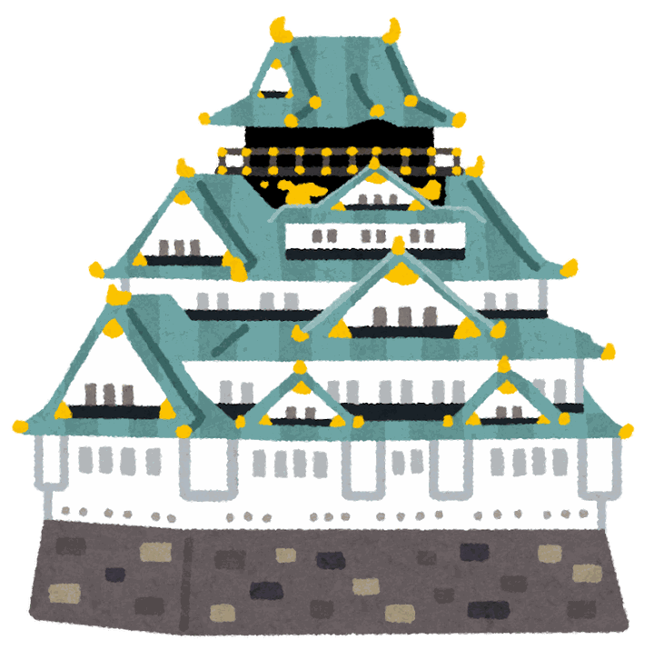

Hospedagem
Um hotel simples, em quarto individual, custa em média cerca de ¥10.000 por noite. Se optar por Airbnb, dependendo da região, é possível encontrar opções mais econômicas.
Viagem 旅行
Muitas pessoas sonham em conhecer o Japão, mas não sabem por onde começar ou quanto dinheiro será necessário. Nesta página, apresentamos os principais destinos turísticos e algumas informações úteis para ajudar no planejamento da sua viagem.
Orçamento 費用
Uma referência para montar seu orçamento. Os valores são aproximados e variam conforme a temporada e o estilo de viagem.
Um hotel simples, em quarto individual, custa em média cerca de ¥10.000 por noite. Se optar por Airbnb, dependendo da região, é possível encontrar opções mais econômicas.
Para economizar, considere aproximadamente ¥2.000 por pessoa por dia. É possível gastar mais ou menos, dependendo do estilo de viagem.
Uma viagem de trem-bala (Shinkansen) entre Tóquio e Osaka custa cerca de ¥15.000. Companhias aéreas de baixo custo (LCC) às vezes oferecem passagens a partir de ¥5.000.
Não se esqueça de reservar parte do orçamento para ingressos de atrações turísticas, museus e lembranças.
Destinos 行き先
Escolha uma região para ver os principais pontos turísticos, com uma breve descrição e como chegar.
A capital do Japão e o destino mais popular entre os turistas. Nos arredores de Tóquio também estão a província de Chiba (onde fica a Tokyo Disney Resort) e a província de Kanagawa, famosa por templos, praias e belas paisagens. Por isso, essas regiões são apresentadas em conjunto.
Ver arredores de Tóquio
A segunda maior cidade do Japão. Cidade vibrante e cheia de energia. Embora tenha semelhanças com Tóquio, possui atmosfera única. Muitos viajantes visitam as duas cidades na mesma viagem.
Ver arredores de OsakaO Japão possui inúmeros lugares incríveis para visitar. Seção indicada para quem tem mais tempo ou deseja conhecer destinos além do tradicional roteiro Tóquio–Osaka.
Ver outras cidadesAproveite para viver experiências que só podem ser encontradas no Japão e transforme sua viagem em uma lembrança inesquecível.
Ver experiênciasLeia as histórias de outros alunos e, se quiser, envie a sua pelo WhatsApp.